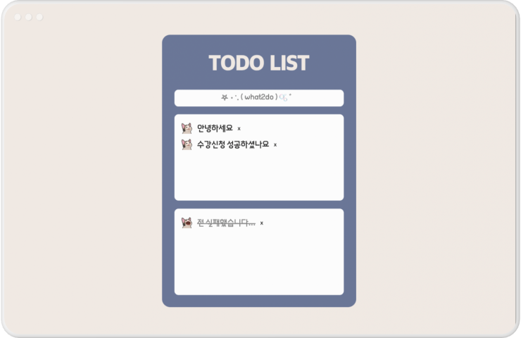
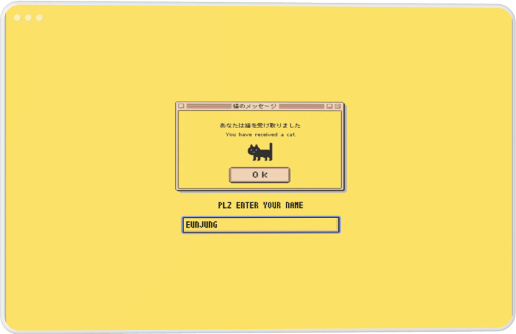
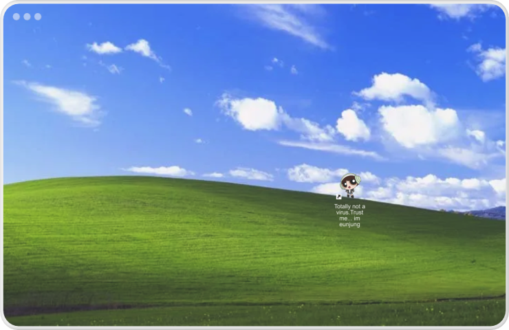

비트코인 모의투자를 위한 웹사이트입니다. 첫 팀 프로젝트인 만큼, '협업'을 가장 중요한 가치로 여겨 github와 notion을 통한 소통을 적극적으로 병행하고 있습니다. 전체 디자인과 FE 파트 담당, 동시에 팀장으로서 전체 팀원을 책임지는 역할을 맡아 스스로가 크게 성장할 수 있었습니다. 현재 Figma 프로토타입 제작이 완료된 상태이며, 2023 겨울 완성을 목표로 하고 있습니다.

<WHAT 2 DO>
2023/08
SOLO project (in study)
VanillaJS ∙ HTML ∙ CSS ∙ React ∙ Vercel
web에서 작동하는 todo list입니다. 할 일 추가, 삭제, 완료 등의 기본적인 기능은 일반적인 투두리스트와 같게 구현하였고, 페이지의 크기 조절에 따라 달라지는 반응형 웹사이트로 구현하였습니다. vanillaJS를 통해 작성한 코드를 React로 리팩토링하는 과정을 통해 두 기능 사이의 차이를 보다 디테일하게 파악할 수 있었습니다.

<You have received a CAT>
2023/09
SOLO project (in study)
React ∙ CSS ∙ Vercel
web에서 FE 기능들을 구현한 메신저입니다. 통신 기능 없이 발신자와 수신자를 토글 기능으로 전환 가능토록 구현했고, CONTEXT API를 활용한 전역 변수의 개념을 보다 명확히 잡는 것을 최우선 목표로 하였습니다. react-router-dom을 이용해 각 페이지의 이동을 어떻게 하는 것이 효율적인가에 대해 고민해 보는 것 또한 단순 페이지 구현을 넘어서 세부 기능들을 갖춘 애플리케이션 제작의 기초 공부에 큰 도움이 되었습니다.

<TRUST ME...IM>
2023/09
SOLO project
VanillaJS ∙ HTML ∙ CSS ∙ Vercel
현재 보고 계신 포트폴리오 사이트입니다. 블랙과 화이트, 고딕의 기본 조합에 그린과 픽셀 폰트를 사용해 포인트를 주었습니다. 추후 프로젝트들이 추가될 예정이기에 유지 및 보수가 용이하도록 HTML의 div 태그를 나누는 것에 대한 고민을 거쳐 코드를 작성하였습니다.